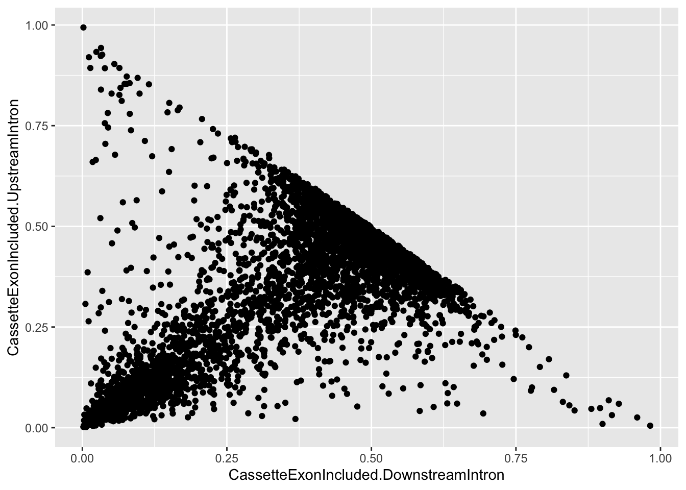
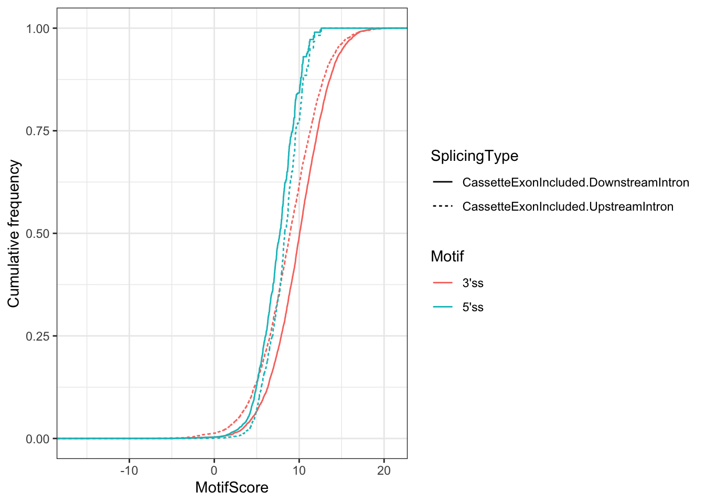
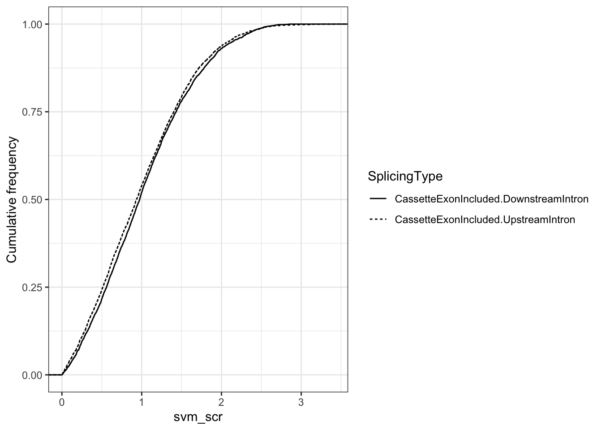

Untitled
Benjamin Fair
January 14, 2020
Last updated: 2020-01-14
Checks: 6 1
Knit directory: rna-seq-dhx38/analysis/
This reproducible R Markdown analysis was created with workflowr (version 1.5.0). The Checks tab describes the reproducibility checks that were applied when the results were created. The Past versions tab lists the development history.
The R Markdown file has unstaged changes. To know which version of the R Markdown file created these results, you’ll want to first commit it to the Git repo. If you’re still working on the analysis, you can ignore this warning. When you’re finished, you can run wflow_publish to commit the R Markdown file and build the HTML.
Great job! The global environment was empty. Objects defined in the global environment can affect the analysis in your R Markdown file in unknown ways. For reproduciblity it’s best to always run the code in an empty environment.
The command set.seed(20191126) was run prior to running the code in the R Markdown file. Setting a seed ensures that any results that rely on randomness, e.g. subsampling or permutations, are reproducible.
Great job! Recording the operating system, R version, and package versions is critical for reproducibility.
Nice! There were no cached chunks for this analysis, so you can be confident that you successfully produced the results during this run.
Great job! Using relative paths to the files within your workflowr project makes it easier to run your code on other machines.
Great! You are using Git for version control. Tracking code development and connecting the code version to the results is critical for reproducibility. The version displayed above was the version of the Git repository at the time these results were generated.
Note that you need to be careful to ensure that all relevant files for the analysis have been committed to Git prior to generating the results (you can use wflow_publish or wflow_git_commit). workflowr only checks the R Markdown file, but you know if there are other scripts or data files that it depends on. Below is the status of the Git repository when the results were generated:
Ignored files:
Ignored: .Rhistory
Ignored: .Rproj.user/
Ignored: analysis/figure/
Untracked files:
Untracked: analysis/20200110_DiffExpression_MoreReplicates.Rmd
Untracked: output/GeneExpression.DE.WithMoreReplicates.tab
Untracked: output/GeneExpression.gsea.WithMoreReplicates.tab
Unstaged changes:
Modified: analysis/20190105_DifferentialSplicingMoreReplicates.Rmd
Modified: analysis/20191203_DiffExpression.Rmd
Note that any generated files, e.g. HTML, png, CSS, etc., are not included in this status report because it is ok for generated content to have uncommitted changes.
These are the previous versions of the R Markdown and HTML files. If you’ve configured a remote Git repository (see ?wflow_git_remote), click on the hyperlinks in the table below to view them.
| File | Version | Author | Date | Message |
|---|---|---|---|---|
| Rmd | 4e8e59a | Benjmain Fair | 2020-01-06 | add splicing analysis with more reps |
| html | 4e8e59a | Benjmain Fair | 2020-01-06 | add splicing analysis with more reps |
Introduction
Exploratory differential expression analysis comparing RNA-seq from iPSC derived neurons from healthy control vs patient with biallelic mutations in DHX38 that may affect splicing and gene expression. Some things I want to check is what kinds of gene sets are differentially spliced, as well as if there are certain intron features associated with differentially spliced introns (weaker 5’ss motif perhaps)
Analysis
I did the same leafcutter differential splicing analysis as before but this time with more replicates, wherein the biological replicates were combined at the level of fastq files.
First, load necessary libraries
library(tidyverse)
library(knitr)
library("clusterProfiler")
library("org.Hs.eg.db")
library(enrichplot)
library(psych)
library(corrplot)
library(ggrepel)Now let’s establish that the 1 healthy vs 1 control (where 3 healthy bioligical replicates are combined into 1, same with control) is comparable with the previous analysis where the replicates are left separate. Obviously I expect the 3vs3 to have more inflated P-values, but I want to check that the P-values are still well correlated.
sig_3v3 <- read.table("../output/leafcutter_ds_analyses/original_cluster_significance.txt.gz", sep='\t', header=T)
head(sig_3v3) %>% kable()| cluster | status | loglr | df | p | p.adjust | genes |
|---|---|---|---|---|---|---|
| chr1:clu_10533_+ | <=1 sample with coverage>min_coverage | NA | NA | NA | NA | LINC01128 |
| chr1:clu_10534_+ | <=1 sample with coverage>min_coverage | NA | NA | NA | NA | KLHL17 |
| chr1:clu_10535_+ | <=1 sample with coverage>min_coverage | NA | NA | NA | NA | KLHL17 |
| chr1:clu_10536_+ | <=1 sample with coverage>min_coverage | NA | NA | NA | NA | ISG15 |
| chr1:clu_10537_+ | Not enough valid samples | NA | NA | NA | NA | ISG15 |
| chr1:clu_10538_+ | Success | 1.859755 | 1 | 0.0537801 | 0.2106285 | AGRN |
sig_1v1 <- read.table("../output/leafcutter_ds_analyses/originalCombined_cluster_significance.txt.gz", sep='\t', header=T)
head(sig_1v1) %>% kable()| cluster | status | loglr | df | p | p.adjust | genes |
|---|---|---|---|---|---|---|
| chr1:clu_10533_+ | <=1 sample with coverage>min_coverage | NA | NA | NA | NA | LINC01128 |
| chr1:clu_10534_+ | <=1 sample with coverage>min_coverage | NA | NA | NA | NA | KLHL17 |
| chr1:clu_10535_+ | Success | 0.0703501 | 1 | 0.7075860 | 0.8695491 | KLHL17 |
| chr1:clu_10536_+ | <=1 sample with coverage>min_coverage | NA | NA | NA | NA | ISG15 |
| chr1:clu_10537_+ | Success | 2.6978256 | 1 | 0.0201870 | 0.2417123 | ISG15 |
| chr1:clu_10538_+ | Success | 1.4471068 | 1 | 0.0888982 | 0.3455686 | AGRN |
#Check that the dimensions of the two results tables are identical... they should be
dim(sig_3v3)[1] 14690 7dim(sig_1v1)[1] 14690 7#Check that the P-values are well correlated
cor.test(sig_3v3$p, sig_1v1$p)
Pearson's product-moment correlation
data: sig_3v3$p and sig_1v1$p
t = 505.42, df = 8438, p-value < 2.2e-16
alternative hypothesis: true correlation is not equal to 0
95 percent confidence interval:
0.9831855 0.9845505
sample estimates:
cor
0.9838823 #Visualize this correlation with scatter plot
left_join(sig_3v3, sig_1v1, by="cluster", suffix=c(".3v3", ".1v1")) %>%
ggplot(aes(x=-log10(p.3v3), y=-log10(p.1v1))) +
geom_point(alpha=0.2) +
theme_bw()
| Version | Author | Date |
|---|---|---|
| 4e8e59a | Benjmain Fair | 2020-01-06 |
Ok. Yes, it seems you get well correlated P-values. I feel justified in combining replicates as I have and running leafcutter’s differential splicing analysis on those combined replicates. This is a much simpler approach than dealing with these different levels of replication with a mixed model for example. Let’s check how many significant clusters you get this way…
hist(sig_3v3$p)
| Version | Author | Date |
|---|---|---|
| 4e8e59a | Benjmain Fair | 2020-01-06 |
hist(sig_1v1$p)
| Version | Author | Date |
|---|---|---|
| 4e8e59a | Benjmain Fair | 2020-01-06 |
table(sig_1v1$p.adjust<0.1)
FALSE TRUE
13237 139 table(sig_3v3$p.adjust<0.1)
FALSE TRUE
7280 1160 Good. there are still some significant clusters to work with, but as expected, there are much less. Now we can add more replicates (different lines, each with multiple replicates similarly combined at the level of fastq files) and check how many significant clusters we get.
sig <- read.table("../output/leafcutter_ds_analyses/AdditionalReps_cluster_significance.txt.gz", sep='\t', header=T)
table(sig$p.adjust<0.1)
FALSE TRUE
13881 24 table(sig$p.adjust<0.2)
FALSE TRUE
13813 92 Ok. only 24 significant differentially spliced clusters at FDR<0.1. These are likely more robustly associated with the DHX sample of interest carrying biallelic mutations. However, let’s permute the contrast samples as a way to assess how much of the inflated P-values might be due to natural genetic variation between unrelated samples and other technical effects that are unrelated to the DHX38 sample specifically. If there is a similar amount of P-value inflation, I will conclude that most of the differentially spliced clusters are still not specific to an additional DHX38 effect, but rather, represent the natural amount of genetic and biological/technical effects present in any of these lines.
#Read in the significant results from the permutated data
Permutation1ClusterSig <- read.table("../output/leafcutter_ds_analyses/AdditionalRepsPerm1_cluster_significance.txt.gz", sep='\t', header=T)
Permutation2ClusterSig <- read.table("../output/leafcutter_ds_analyses/AdditionalRepsPerm2_cluster_significance.txt.gz", sep='\t', header=T)
Permutation3ClusterSig <- read.table("../output/leafcutter_ds_analyses/AdditionalRepsPerm3_cluster_significance.txt.gz", sep='\t', header=T)
data.frame(RealResults=sig$p,
Permutation1Results=Permutation1ClusterSig$p,
Permutation2Results=Permutation2ClusterSig$p,
Permutation3Results=Permutation3ClusterSig$p) %>% gather(value="Actual.P") %>%
group_by(key) %>%
mutate(Expected.P=percent_rank(Actual.P)) %>%
ungroup() %>%
ggplot(aes(color=key, x=-log10(Expected.P), y=-log10(Actual.P))) +
geom_point() +
geom_abline() +
scale_color_manual(labels = c(Permutation1Results="Permuted; [BIH4] v [DHX, XM001, JG]",
Permutation2Results="Permuted; [XM001] v [DHX, BIH4, JG]",
Permutation3Results="Permuted; [JG] v [DHX, XM001, BIH4]",
RealResults="Actual; [DHX] v [BIH4, XM001, JG]"),
values=c("red", "blue", "purple", "black")) +
theme_bw()
| Version | Author | Date |
|---|---|---|
| 4e8e59a | Benjmain Fair | 2020-01-06 |
Ok, similar to the same plot made for gene expression analysis, there is not drastically more P-value inflation than in some of the permutations, and in fact there is more small P-value inflation in one of the permutations. I conclude that the effect of the DHX38 mutation is quite small, relative to the effect of comparing any random sample of different unrelated lines. Most of the significantly different splice events are probably not due to DHX38. Nonetheless, assuming that there really is a DHX38-specific splicing defect, the splice events we do find are the best prioritized list of DHX38-dependednt splice events that we can do, with the data at hand.
Also, with only 24 significantly differentially spliced clusters, there isn’t much reasonable downstream analysis we can do with regards to looking for intron features that explain these. Let’s make a volcano plot to visualize, labelling the genes with the significantly changed splicing events.
effect_sizes <- read.table("../output/leafcutter_ds_analyses/AdditionalReps_effect_sizes.txt.gz", sep='\t', header=T)
#how many clusters tested ("Success")
table(sig$status) %>% kable()| Var1 | Freq |
|---|---|
| <=1 sample with coverage>0 | 3 |
| <=1 sample with coverage>min_coverage | 722 |
| Not enough valid samples | 60 |
| Success | 13905 |
#how many introns for each cluster
effect_sizes %>%
mutate(Cluster=sub(".+?:(clu_.+?_.+?)","\\1",intron)) %>%
group_by(Cluster) %>%
tally() %>%
ggplot(aes(x=n)) +
geom_histogram() +
scale_x_continuous(breaks = seq(1, 10, by = 1), limits=c(1,10)) +
xlab("Num introns per cluster") +
ylab("Freq") +
theme_bw()#histogram of Pvalues
hist(sig$p)#how many significant (p.adjust < 0.1)
table(sig$p.adjust<0.1) %>% kable()| Var1 | Freq |
|---|---|
| FALSE | 13881 |
| TRUE | 24 |
# merge significance and cluster tables
leafcutter.merged <- effect_sizes %>%
mutate(cluster=gsub("(.+?:).+?:.+?:(clu.+?)", "\\1\\2", intron, perl=T)) %>%
mutate(junc_id=gsub("(.+?:.+?:.+?):clu.+", "\\1", intron, perl=T)) %>%
left_join(sig, by="cluster")
# volcano plot of cluster-pvalues and largest within-cluster-delta-psi
leafcutter.merged %>%
mutate(abs.deltapsi = abs(deltapsi)) %>%
group_by(cluster) %>%
top_n(n=1, abs.deltapsi) %>%
mutate(sig=p.adjust<0.1 & abs.deltapsi>0.1) %>%
mutate(label=dplyr::case_when(
sig==TRUE ~ as.character(genes),
sig==FALSE ~ ""
)) %>%
mutate(alpha=case_when(
sig==TRUE ~ 1,
sig==FALSE ~ 0.05
)) %>%
ggplot(aes(x=deltapsi, y=-log10(p), color=sig, label=label)) +
geom_point(aes(alpha=alpha)) +
geom_text_repel(size=3) +
theme_bw() +
theme(legend.position = "none")Let’s check for intron clusters that overlap DHX38 gene, in case the gene itself is differentially spliced, possibly as a result of the mutations acting in cis.
There are no clusters over DHX38. Note that leafcutter output only lists clusters that have more than 1 intron (not simple constitutive splicing) and that pass some default filters for minimum coverage over each the splice junction.
#Filter based on leafcutter's gene annotations.
sig %>% dplyr::filter(grepl("DHX38",genes)) cluster status loglr df p p.adjust genes
1 chr16:clu_6060_+ Success 2.86251 1 0.01672485 0.3738497 DHX38#Filter also based on genome coordinates of DHX38
effect_sizes %>%
separate(intron, into=c("chrom", "start", "stop", "cluster"), sep=":") %>%
filter(chrom=="chr16" & start>= 72093613 & stop <= 72112912) chrom start stop cluster logef H A
1 chr16 72106104 72107340 clu_6060_+ -0.6478399 0.1210321 0.03632065
2 chr16 72106117 72107340 clu_6060_+ 0.6478399 0.8789679 0.96367935
deltapsi
1 -0.08471147
2 0.08471147what kinds of intron features distinguish differentially spliced introns, which may be more enlightening about general splicing mechanisms due to this DHX38 genotype.
I have scored the 5’ss and 3’ss motifs for each intron tested using a position specific score matrix based on annotated introns. I additionally used svm-bpfinder to score the best computationally predicted branch for each intron. I also annotated whether each intron is annotated, an unanottated alt3’ss, an unanotated alt5’ss, an unannotated new pairing of splice sites, or new intron (unannotated 5’ and unannotated 3’ss). All of that work is hidden in the code section and output into a file in output.
Let’s see if any of those features correlate with differentially expressed introns. If there is the DHX38 mutations preferentially activates less consensus splice sites for example, I expect the directionality to be consistent. Therefore, I will correlate those scores with the logeff (polarized effect size) for each intron, for significant introns.
#read intron features
IntronFeatures <- read.table("../output/IntronFeatures.txt.gz", sep='\t', header=T) %>%
separate(Intron, c("chrom", "start", "stop", "strand"), sep = "_") %>%
mutate(newStop=as.numeric(stop)+1,
newStart=as.numeric(start)) %>%
mutate(
junc_id=paste(paste0("chr", chrom), newStart, newStop, sep=":"),
IntronLength=newStop-newStart) %>%
dplyr::select(-c("chrom", "start", "stop", "newStop", "newStart"))
head(IntronFeatures) %>% kable()| strand | type | donor_seq | DonorScore | acceptor_seq | AcceptorScore | eqez | ss_dist | bp_seq | bp_scr | y_cont | ppt_off | ppt_len | ppt_scr | svm_scr | junc_id | IntronLength |
|---|---|---|---|---|---|---|---|---|---|---|---|---|---|---|---|---|
| + | NewIntron | CAGGTGAAG | 7.509 | GCTGTGGTCTTCATCTGCAGGTG | 9.120 | 29 | 22 | tcttgatgc | 0.7736716 | 0.7058824 | 9 | 9 | 19 | 0.5400024 | chr1:11671:12010 | 339 |
| + | NewIntron | CGGGTATCA | 2.853 | GCTGTGGTCTTCATCTGCAGGTG | 9.120 | 29 | 22 | tcttgatgc | 0.7736716 | 0.7058824 | 9 | 9 | 19 | 0.5400024 | chr1:11844:12010 | 166 |
| + | AnnotatedSpliceSite | GAGGTGAGA | 9.498 | TAGCCTCTGTTCCCACGAAGGCA | 4.753 | 17 | 19 | gccttagcc | -0.9155434 | 0.7857143 | 2 | 13 | 22 | 0.3754140 | chr1:12721:13221 | 500 |
| + | NewIntron | AAAGTGAGG | 7.351 | AGAAGGGGAGAAGAGGAAAGGGG | -14.250 | NA | NA | NA | NA | NA | NA | NA | NA | NA | chr1:13114:183635 | 170521 |
| - | NewIntron | AGGGTAGGA | 6.363 | CATGACACCTTCCCCCCCAGACC | 6.602 | 27 | 16 | ccatgacac | 1.3904305 | 0.9090909 | 1 | 11 | 20 | 1.3628254 | chr1:14668:14970 | 302 |
| - | NewIntron | CTTGTAATT | 3.934 | ACTCAGCCTTTTCCCTCCAGGCA | 11.310 | 14 | 20 | ccctcactc | 2.5121196 | 0.8666667 | 1 | 15 | 28 | 1.8628447 | chr1:14829:14930 | 101 |
#Check an example of a good donor score and a bad donor score
#Good splice donor (positions -3 to +6)
IntronFeatures %>%
top_n(1, DonorScore) %>% head(1) %>%
dplyr::select(donor_seq, DonorScore) donor_seq DonorScore
1 CAGGTAAGT 12.6#Bad splice donor
IntronFeatures %>%
top_n(-1, DonorScore) %>% head(1) %>%
dplyr::select(donor_seq, DonorScore) donor_seq DonorScore
1 TTCATTCCA -15.08# Check that the number of types of unannotated splicing is similar in both strands. Sometimes bugs related to coordinates produce wonky results
IntronFeatures %>%
filter(strand=="-") %>%
pull(type) %>% table().
Alt3ss Alt5ss AltPairingOfSites AnnotatedSpliceSite
35029 26917 21176 112893
NewIntron
37099 IntronFeatures %>%
filter(strand=="+") %>%
pull(type) %>% table().
Alt3ss Alt5ss AltPairingOfSites AnnotatedSpliceSite
35787 27336 21710 115391
NewIntron
38410 # merge the intron features with the leafcutter results and filter for the significantly differentially spliced introns that have the greatest effect size within cluster
leafcutter.merged.w.features <- leafcutter.merged %>%
mutate(abs.effectsize = abs(logef)) %>%
group_by(cluster) %>%
top_n(n=1, abs.effectsize) %>%
ungroup() %>%
filter(p.adjust<0.2) %>%
left_join(IntronFeatures, by="junc_id")
# Are specific types of unannotated splicing more prevalent?
leafcutter.merged.w.features %>%
pull(type) %>% table().
Alt3ss Alt5ss AltPairingOfSites AnnotatedSpliceSite
1 7 8 72
NewIntron
6 colnames(leafcutter.merged.w.features) [1] "intron" "logef" "H" "A"
[5] "deltapsi" "cluster" "junc_id" "status"
[9] "loglr" "df" "p" "p.adjust"
[13] "genes" "abs.effectsize" "strand" "type"
[17] "donor_seq" "DonorScore" "acceptor_seq" "AcceptorScore"
[21] "eqez" "ss_dist" "bp_seq" "bp_scr"
[25] "y_cont" "ppt_off" "ppt_len" "ppt_scr"
[29] "svm_scr" "IntronLength" # Set up features and effect sizes into a cleaner data frame
IntronFeaturesAndEffectSizes <- leafcutter.merged.w.features %>%
dplyr::select(junc_id, logef, DonorScore, AcceptorScore, ss_dist, bp_scr, ppt_len, ppt_scr, svm_scr, IntronLength) %>%
column_to_rownames("junc_id")
# See if there is any correlations
CorrelationsWithFeatures <- corr.test(x=IntronFeaturesAndEffectSizes[,1],
y=IntronFeaturesAndEffectSizes[,-1],
method="spearman",
adjust="none")
# table of spearmans r, pvalue, and n
data.frame(Spearman.r= t(CorrelationsWithFeatures$r), p=t(CorrelationsWithFeatures$p), n=t(CorrelationsWithFeatures$n)) %>% kable()| S | pearman.r | p | n |
|---|---|---|---|
| DonorScore | 0.0214669 | 0.8372843 | 94 |
| AcceptorScore | 0.0247519 | 0.8128087 | 94 |
| ss_dist | -0.0822056 | 0.4490769 | 87 |
| bp_scr | 0.0297989 | 0.7840949 | 87 |
| ppt_len | -0.0668364 | 0.5385021 | 87 |
| ppt_scr | -0.1043431 | 0.3361503 | 87 |
| svm_scr | -0.0401693 | 0.7118263 | 87 |
| IntronLength | 0.1171120 | 0.2609604 | 94 |
None of the features tested seem to correlate with the effect size of largest-effect introns in significant clusters.
Check if the significant positive effect-size splicing changes have more cryptic 5’ss, or more cryptic 3’ss than negative effect-size splicing changes.
When doing this analysis, some people think in terms of deltapsi, some people might think in terms of a different metric of effect size. Let’s look at both.
# leafcutter's logef effect size, versus deltapsi
qplot(leafcutter.merged.w.features$logef, leafcutter.merged.w.features$deltapsi) + theme_bw()#significant positive deltapsi introns
leafcutter.merged.w.features %>%
filter(deltapsi > 0) %>%
pull(type) %>% table().
Alt3ss Alt5ss AltPairingOfSites AnnotatedSpliceSite
1 1 4 49
NewIntron
5 #significant negative deltapsi introns
leafcutter.merged.w.features %>%
filter(deltapsi < 0) %>%
pull(type) %>% table().
Alt3ss Alt5ss AltPairingOfSites AnnotatedSpliceSite
0 6 4 23
NewIntron
1 leafcutter.merged.w.features %>%
ggplot(aes(x=deltapsi, color=type)) +
stat_ecdf(geom = "step") +
ylab("Cumulative frequency") +
theme_bw()There simply aren’t many significant introns to do this kind of analyses. Nonetheless, the polarization in effect sizse for annotated introns and unanottated cryptic 5’ss seems to be the most likely candidates to be significant. Let’s see if these effects are significant or could just be chance.
## are alt annotated splice sites differentially regulated?
wilcox.test(
leafcutter.merged.w.features %>%
filter(type=="AnnotatedSpliceSite") %>% pull(deltapsi))
Wilcoxon signed rank test with continuity correction
data: leafcutter.merged.w.features %>% filter(type == "AnnotatedSpliceSite") %>% pull(deltapsi)
V = 1643.5, p-value = 0.06486
alternative hypothesis: true location is not equal to 0# same test but using logef instead of deltapsi
wilcox.test(
leafcutter.merged.w.features %>%
filter(type=="AnnotatedSpliceSite") %>% pull(logef))
Wilcoxon signed rank test with continuity correction
data: leafcutter.merged.w.features %>% filter(type == "AnnotatedSpliceSite") %>% pull(logef)
V = 1679.5, p-value = 0.04053
alternative hypothesis: true location is not equal to 0## are cryptic unannotated 5'ss differentially regulated?
wilcox.test(
leafcutter.merged.w.features %>%
filter(type=="Alt5ss") %>% pull(deltapsi))
Wilcoxon signed rank test
data: leafcutter.merged.w.features %>% filter(type == "Alt5ss") %>% pull(deltapsi)
V = 5, p-value = 0.1563
alternative hypothesis: true location is not equal to 0# same test but using logef instead of deltapsi
wilcox.test(
leafcutter.merged.w.features %>%
filter(type=="Alt5ss") %>% pull(logef))
Wilcoxon signed rank test
data: leafcutter.merged.w.features %>% filter(type == "Alt5ss") %>% pull(logef)
V = 3, p-value = 0.07813
alternative hypothesis: true location is not equal to 0These effects aren’t signicant enough to warrant mention in my opinion.
Note that thus far, all my alternative splicing type classifications are based on identifying splice donors and splice acceptors that aren’t in annotated transcripts (Ensembl annotations)… In other words, alternative 5’ss events that are annotated (most identified alternative splicing is annotated), are simply classified as “annotated”. But if the effect about downregulation of cryptic 5’ss is real, I also expect the minor intron for annotated alternative 5’ss to decrease in the affected. So let’s try to classify splicing types regardless of annotations, at least for clusters with only two or three introns where this is relatively straightforward:
For example, for a cluster with two introns, if the splice donor coordinates is listed twice in the dataset and the splice acceptor coordinates is listed once, we know it is alternative 5’ss usage.
#Reclassify splicing types
leafcutter.merged.AS.reclassified <- leafcutter.merged %>%
dplyr::select(intron) %>%
separate(intron, into=c("chrom", "start", "stop", "cluster"), sep=":", remove=F) %>%
mutate(strand=sub("clu_\\d+_(.+)", "\\1", cluster)) %>%
mutate(
SpliceDonorCoord=case_when(
strand=="+" ~ paste(chrom, start, strand),
strand=="-" ~ paste(chrom, stop, strand)),
SpliceAcceptorCoord=case_when(
strand=="+" ~ paste(chrom, stop, strand),
strand=="-" ~ paste(chrom, start, strand))) %>%
dplyr::select(intron, cluster, SpliceDonorCoord,SpliceAcceptorCoord) %>%
add_count(cluster, name="IntronsPerCluster") %>%
add_count(SpliceDonorCoord, name="SpliceDonorCount") %>%
add_count(SpliceAcceptorCoord, name="SpliceAcceptorCount") %>%
mutate(SplicingType=case_when(
IntronsPerCluster==2 & SpliceDonorCount==2 ~ "Alt3ss",
IntronsPerCluster==2 & SpliceAcceptorCount==2 ~ "Alt5ss",
IntronsPerCluster==3 & SpliceDonorCount==2 & SpliceAcceptorCount==2 ~ "CassetteExonSkipped",
IntronsPerCluster==3 & SpliceDonorCount==1 & SpliceAcceptorCount==2 ~ "CassetteExonIncluded.DownstreamIntron",
IntronsPerCluster==3 & SpliceDonorCount==2 & SpliceAcceptorCount==1 ~ "CassetteExonIncluded.UpstreamIntron",
IntronsPerCluster==3 & SpliceDonorCount==3 & SpliceAcceptorCount==1 ~ "Alt3ss",
IntronsPerCluster==3 & SpliceDonorCount==1 & SpliceAcceptorCount==3 ~ "Alt5ss",
IntronsPerCluster>=4 ~ "Complex"
)) %>%
dplyr::select(intron, SplicingType) %>%
left_join(leafcutter.merged, by="intron")
#Number of splicing types
table(leafcutter.merged.AS.reclassified$SplicingType) %>% kable()| Var1 | Freq |
|---|---|
| Alt3ss | 7713 |
| Alt5ss | 6208 |
| CassetteExonIncluded.DownstreamIntron | 4748 |
| CassetteExonIncluded.UpstreamIntron | 4748 |
| CassetteExonSkipped | 4748 |
| Complex | 12892 |
# Check that the classifications make sense by manually inspecting some intron coordinates for a few clusters
head(leafcutter.merged.AS.reclassified) %>% kable()| intron | SplicingType | logef | H | A | deltapsi | cluster | junc_id | status | loglr | df | p | p.adjust | genes |
|---|---|---|---|---|---|---|---|---|---|---|---|---|---|
| chr1:829104:847654:clu_10533_+ | CassetteExonIncluded.UpstreamIntron | -0.1365485 | 0.4032932 | 0.3549527 | -0.0483405 | chr1:clu_10533_+ | chr1:829104:847654 | Success | 0.0942184 | 2 | 0.9100840 | 0.9746209 | LINC01128 |
| chr1:829104:851927:clu_10533_+ | CassetteExonSkipped | 0.0657430 | 0.2097756 | 0.2260261 | 0.0162505 | chr1:clu_10533_+ | chr1:829104:851927 | Success | 0.0942184 | 2 | 0.9100840 | 0.9746209 | LINC01128 |
| chr1:847806:851927:clu_10533_+ | CassetteExonIncluded.DownstreamIntron | 0.0708055 | 0.3869312 | 0.4190212 | 0.0320900 | chr1:clu_10533_+ | chr1:847806:851927 | Success | 0.0942184 | 2 | 0.9100840 | 0.9746209 | LINC01128 |
| chr1:964167:964349:clu_10535_+ | Alt5ss | 0.1486869 | 0.6494433 | 0.7138112 | 0.0643679 | chr1:clu_10535_+ | chr1:964167:964349 | Success | 0.2020411 | 1 | 0.5249885 | 0.8322711 | KLHL17 |
| chr1:964180:964349:clu_10535_+ | Alt5ss | -0.1486869 | 0.3505567 | 0.2861888 | -0.0643679 | chr1:clu_10535_+ | chr1:964180:964349 | Success | 0.2020411 | 1 | 0.5249885 | 0.8322711 | KLHL17 |
| chr1:1008279:1013984:clu_10537_+ | Alt5ss | -0.5311327 | 0.1826391 | 0.0717020 | -0.1109371 | chr1:clu_10537_+ | chr1:1008279:1013984 | Success | 1.2342663 | 1 | 0.1161463 | 0.5755373 | ISG15 |
# Check that the classifications make sense in that the fraction of junction reads for introns upstream of cassette exons should strongly positively correlate with the fraction for introns downstream of cassette exons
PlotExonSkippingSpliceRatios <- leafcutter.merged.AS.reclassified %>%
dplyr::select(cluster, SplicingType, H) %>%
filter(SplicingType %in% c("CassetteExonIncluded.DownstreamIntron", "CassetteExonIncluded.UpstreamIntron", "CassetteExonSkipped")) %>%
spread(key="SplicingType", value="H")
ggplot(PlotExonSkippingSpliceRatios, aes(x=CassetteExonIncluded.DownstreamIntron, y=CassetteExonIncluded.UpstreamIntron)) +
geom_point()
| Version | Author | Date |
|---|---|---|
| 4e8e59a | Benjmain Fair | 2020-01-06 |
#And there should generally be anti correlation with the exon skipped isoform and either of the exon included introns
ggplot(PlotExonSkippingSpliceRatios, aes(x=CassetteExonIncluded.DownstreamIntron, y=CassetteExonSkipped)) +
geom_point()
| Version | Author | Date |
|---|---|---|
| 4e8e59a | Benjmain Fair | 2020-01-06 |
#And finally, cassette skipped exons should have weaker splice sites.
leafcutter.merged.AS.reclassified %>%
left_join(IntronFeatures, by="junc_id") %>%
filter(SplicingType %in% c("CassetteExonIncluded.DownstreamIntron", "CassetteExonIncluded.UpstreamIntron")) %>%
dplyr::select(SplicingType, DonorScore, AcceptorScore) %>%
gather(key="Motif", value="MotifScore", -SplicingType) %>%
mutate(Motif=case_when(
Motif=="DonorScore" ~ "5'ss",
Motif== "AcceptorScore" ~ "3'ss")) %>%
ggplot(aes(x=MotifScore, color=Motif, linetype=SplicingType)) +
stat_ecdf(geom = "step") +
ylab("Cumulative frequency") +
theme_bw()
| Version | Author | Date |
|---|---|---|
| 4e8e59a | Benjmain Fair | 2020-01-06 |
A<-leafcutter.merged.AS.reclassified %>%
left_join(IntronFeatures, by="junc_id") %>%
filter(SplicingType %in% c("CassetteExonIncluded.DownstreamIntron", "CassetteExonIncluded.UpstreamIntron")) %>%
dplyr::select(SplicingType, DonorScore, AcceptorScore)
wilcox.test(DonorScore~SplicingType, data=A, alternative="less")
Wilcoxon rank sum test with continuity correction
data: DonorScore by SplicingType
W = 9365248, p-value < 2.2e-16
alternative hypothesis: true location shift is less than 0wilcox.test(AcceptorScore~SplicingType, data=A)
Wilcoxon rank sum test with continuity correction
data: AcceptorScore by SplicingType
W = 13367826, p-value < 2.2e-16
alternative hypothesis: true location shift is not equal to 0leafcutter.merged.AS.reclassified %>%
left_join(IntronFeatures, by="junc_id") %>%
filter(SplicingType %in% c("CassetteExonIncluded.DownstreamIntron", "CassetteExonIncluded.UpstreamIntron")) %>%
dplyr::select(SplicingType, svm_scr) %>%
ggplot(aes(x=svm_scr, linetype=SplicingType)) +
stat_ecdf(geom = "step") +
ylab("Cumulative frequency") +
theme_bw()
| Version | Author | Date |
|---|---|---|
| 4e8e59a | Benjmain Fair | 2020-01-06 |
Okay yes, for cassette exons, upstream introns have weaker splice acceptors than down stream splice acceptors, downstream introns have weaker splice donors than upstream splice donors. That pattern isn’t apparent for branchpoints though, so that signal may be too weak, or predictions on branchpoints may be lousy.
But all in all it seems that my classification of alternative splicing types makes sense. Now let’s check if the minor isoform (as assessed in healthy samples) for each splicing type is has a general polarity to effect size. Specifically, if alt5’ss have negative effect sizes.
MinorIsoforms <- leafcutter.merged.AS.reclassified %>%
filter(p.adjust<0.3) %>%
group_by(cluster) %>%
top_n(-1, H) %>%
ungroup()
#histogram of splicing fraction of minor isoforms (intron with smallest splicing fraction within cluster)
hist(MinorIsoforms$H)MajorIsoforms <- leafcutter.merged.AS.reclassified %>%
filter(p.adjust<0.3) %>%
group_by(cluster) %>%
top_n(1, H) %>%
ungroup()
#histogram of splicing fraction of major isoforms (intron with largest splicing fraction within cluster)
hist(MajorIsoforms$H)
#Now make plots to get to know if minor isoform alt5'ss have generally gone down. Same for alt 3'ss.
MinorIsoforms %>%
filter(SplicingType %in% c("Alt5ss", "Alt3ss")) %>%
ggplot(aes(x=deltapsi, color=SplicingType)) +
stat_ecdf(geom = "step") +
xlim(c(-1,1))+
ylab("Cumulative frequency") +
theme_bw()#Mirrored plot for major isoforms.
MajorIsoforms %>%
filter(SplicingType %in% c("Alt5ss", "Alt3ss")) %>%
ggplot(aes(x=deltapsi, color=SplicingType)) +
stat_ecdf(geom = "step") +
xlim(c(-1,1))+
ylab("Cumulative frequency") +
theme_bw()
#Is this significant?
wilcox.test(
MinorIsoforms %>%
filter(SplicingType=="Alt5ss") %>% pull(logef))
Wilcoxon signed rank test
data: MinorIsoforms %>% filter(SplicingType == "Alt5ss") %>% pull(logef)
V = 146, p-value = 0.4678
alternative hypothesis: true location is not equal to 0wilcox.test(
MinorIsoforms %>%
filter(SplicingType=="Alt3ss") %>% pull(logef))
Wilcoxon signed rank test
data: MinorIsoforms %>% filter(SplicingType == "Alt3ss") %>% pull(logef)
V = 192, p-value = 0.594
alternative hypothesis: true location is not equal to 0#Try exon skipping
leafcutter.merged.AS.reclassified %>%
filter(p.adjust<0.3) %>%
filter(SplicingType %in% c("CassetteExonSkipped", "CassetteExonIncluded.DownstreamIntron", "CassetteExonIncluded.UpstreamIntron")) %>%
ggplot(aes(x=deltapsi, color=SplicingType)) +
stat_ecdf(geom = "step") +
xlim(c(-1,1))+
ylab("Cumulative frequency") +
theme_bw()So there is no apparent difference in alt5’ss or alt3’ss usage when I considered all easily classifiable introns, regardless of annotation. In other words, the minor isoforms for 5’ss were equally up and down regulated. This is mirrored in when looking at major isoforms.
Finally, since all of this type of analysis didn’t return anything very interesting with confidence, I should browse the raw aligned read data in IGV to explore patterns that I might not have picked up on this differential splicing analysis. To aid in IGV exploration, let’s write out a bed file of the most significant clusters so we can quickly jump to the regions of interest that are differentially spliced
#bed file, with chromosome, start, stop, name, score, strand, extra info
BedFile <- leafcutter.merged.AS.reclassified %>%
dplyr::select(intron, SplicingType, logef, deltapsi, p) %>%
separate(intron, into=c("chrom", "start", "stop", "cluster"), remove=F) %>%
mutate(extra=paste(logef, deltapsi, SplicingType),
score=-log10(p),
strand=".",
name=paste0(chrom,":",start,"-",stop)
)%>%
dplyr::select(chrom, start, stop, name, score, strand, extra )
head(BedFile) %>% kable()| chrom | start | stop | name | score | strand | extra |
|---|---|---|---|---|---|---|
| chr1 | 829104 | 847654 | chr1:829104-847654 | 0.0409185 | . | -0.136548512778748 -0.0483405254670429 CassetteExonIncluded.UpstreamIntron |
| chr1 | 829104 | 851927 | chr1:829104-851927 | 0.0409185 | . | 0.0657429995098606 0.0162505111995736 CassetteExonSkipped |
| chr1 | 847806 | 851927 | chr1:847806-851927 | 0.0409185 | . | 0.0708055132688876 0.0320900142674692 CassetteExonIncluded.DownstreamIntron |
| chr1 | 964167 | 964349 | chr1:964167-964349 | 0.2798502 | . | 0.14868691020407 0.0643679254899464 Alt5ss |
| chr1 | 964180 | 964349 | chr1:964180-964349 | 0.2798502 | . | -0.14868691020407 -0.0643679254899463 Alt5ss |
| chr1 | 1008279 | 1013984 | chr1:1008279-1013984 | 0.9349945 | . | -0.531132748000042 -0.110937105555015 Alt5ss |
write.table(BedFile, file="../output/DiffSplicingRegions.WithMoreReplicates.bed", sep='\t', row.names = F, col.names = F, quote=F)Conclusions
sessionInfo()R version 3.6.1 (2019-07-05)
Platform: x86_64-apple-darwin15.6.0 (64-bit)
Running under: macOS Catalina 10.15.1
Matrix products: default
BLAS: /Library/Frameworks/R.framework/Versions/3.6/Resources/lib/libRblas.0.dylib
LAPACK: /Library/Frameworks/R.framework/Versions/3.6/Resources/lib/libRlapack.dylib
locale:
[1] en_US.UTF-8/en_US.UTF-8/en_US.UTF-8/C/en_US.UTF-8/en_US.UTF-8
attached base packages:
[1] parallel stats4 stats graphics grDevices utils datasets
[8] methods base
other attached packages:
[1] ggrepel_0.8.1 corrplot_0.84 psych_1.8.12
[4] enrichplot_1.4.0 org.Hs.eg.db_3.8.2 AnnotationDbi_1.46.1
[7] IRanges_2.18.3 S4Vectors_0.22.1 Biobase_2.44.0
[10] BiocGenerics_0.30.0 clusterProfiler_3.12.0 knitr_1.26
[13] forcats_0.4.0 stringr_1.4.0 dplyr_0.8.3
[16] purrr_0.3.3 readr_1.3.1 tidyr_1.0.0
[19] tibble_2.1.3 ggplot2_3.2.1 tidyverse_1.3.0
loaded via a namespace (and not attached):
[1] fgsea_1.10.1 colorspace_1.4-1 ellipsis_0.3.0
[4] ggridges_0.5.1 rprojroot_1.3-2 qvalue_2.16.0
[7] fs_1.3.1 rstudioapi_0.10 farver_2.0.1
[10] urltools_1.7.3 graphlayouts_0.5.0 bit64_0.9-7
[13] fansi_0.4.0 lubridate_1.7.4 xml2_1.2.2
[16] splines_3.6.1 mnormt_1.5-5 GOSemSim_2.10.0
[19] polyclip_1.10-0 zeallot_0.1.0 jsonlite_1.6
[22] workflowr_1.5.0 broom_0.5.2 GO.db_3.8.2
[25] dbplyr_1.4.2 ggforce_0.3.1 BiocManager_1.30.10
[28] compiler_3.6.1 httr_1.4.1 rvcheck_0.1.7
[31] backports_1.1.5 assertthat_0.2.1 Matrix_1.2-18
[34] lazyeval_0.2.2 cli_2.0.0 later_1.0.0
[37] tweenr_1.0.1 htmltools_0.4.0 prettyunits_1.0.2
[40] tools_3.6.1 igraph_1.2.4.2 gtable_0.3.0
[43] glue_1.3.1 reshape2_1.4.3 DO.db_2.9
[46] fastmatch_1.1-0 Rcpp_1.0.2 cellranger_1.1.0
[49] vctrs_0.2.0 nlme_3.1-143 ggraph_2.0.0
[52] xfun_0.11 rvest_0.3.5 lifecycle_0.1.0
[55] DOSE_3.10.2 europepmc_0.3 MASS_7.3-51.4
[58] scales_1.1.0 tidygraph_1.1.2 hms_0.5.2
[61] promises_1.1.0 RColorBrewer_1.1-2 yaml_2.2.0
[64] memoise_1.1.0 gridExtra_2.3 UpSetR_1.4.0
[67] triebeard_0.3.0 stringi_1.4.3 RSQLite_2.1.4
[70] highr_0.8 BiocParallel_1.18.1 rlang_0.4.1
[73] pkgconfig_2.0.3 evaluate_0.14 lattice_0.20-38
[76] labeling_0.3 cowplot_1.0.0 bit_1.1-14
[79] tidyselect_0.2.5 plyr_1.8.5 magrittr_1.5
[82] R6_2.4.1 generics_0.0.2 DBI_1.0.0
[85] foreign_0.8-72 pillar_1.4.2 haven_2.2.0
[88] whisker_0.4 withr_2.1.2 modelr_0.1.5
[91] crayon_1.3.4 rmarkdown_1.18 viridis_0.5.1
[94] progress_1.2.2 grid_3.6.1 readxl_1.3.1
[97] data.table_1.12.8 blob_1.2.0 git2r_0.26.1
[100] reprex_0.3.0 digest_0.6.23 httpuv_1.5.2
[103] gridGraphics_0.4-1 munsell_0.5.0 ggplotify_0.0.4
[106] viridisLite_0.3.0